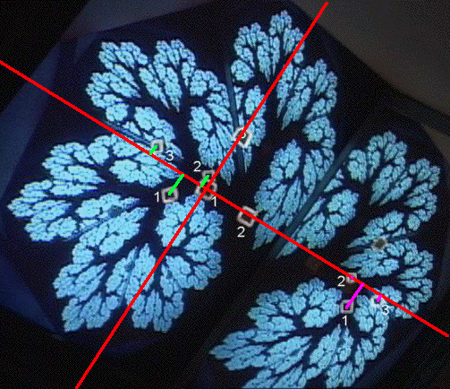

|  |
| To find IFS rules to generate this image, start with three points on the monitor, find their images
on the monitor and on the mirror. |
| That the images q1, q2, and q3 of three non-collinear
points p1, p2, and p3 determine a unique affine transformation
is not difficult to see. Here are some practice problems. We call
p1, p2, and p3 the source points and
q1, q2, and q3 the target points. |
| We select coordinates to simplify the computations. Take the source point p1 to be the
origin and p2 lying along the x-axis. |
| Using a cm scale we measure these values |
| p1 = (0,0), p2 = (1.4,0), and p3 = (0,1.9) |
| For the target points on the left side of the image we measure |
| q1 = (-.9,-.7),
q2 = (-.2,.4), and
q3 = (-1.9,.3) |
| From this data the affine transformation calculator finds |
| r | s | theta |
phi | e | f |
| .93 | .74 | 56 |
45 | -.9 | -.7 |
|
|
| For the target points on the right side of the image we measure |
| q1 = (5.4,-.8),
q2 = (5.1,0), and
q3 = (6.1,-.1) |
| From this data the affine transformation calculator finds |
| r | s | theta |
phi | e | f |
| -.61 | .52 | -69 |
-45 | 5.4 | -.8 |
|
|
|
| Here is the IFS picture, and some modifications. |